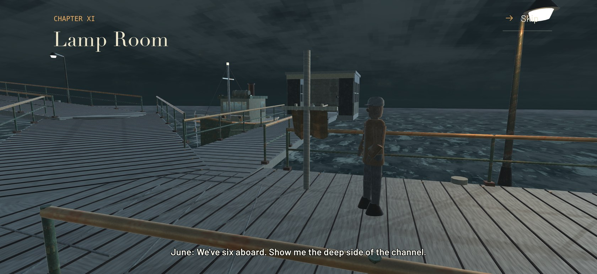
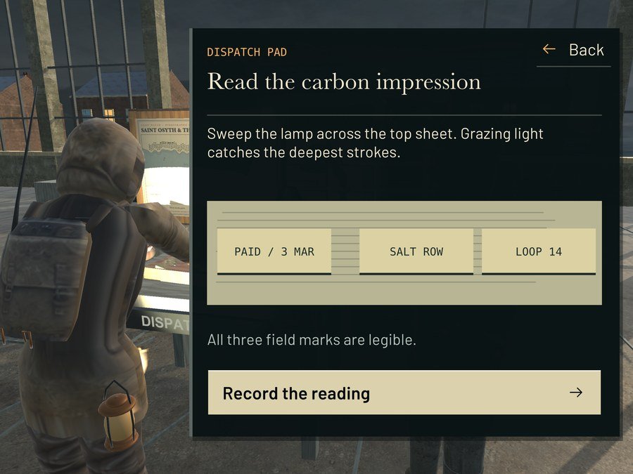
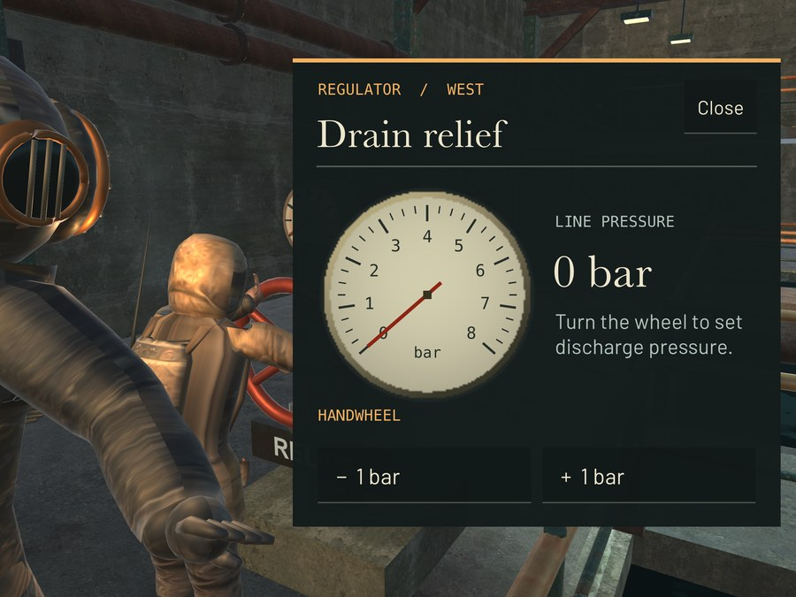
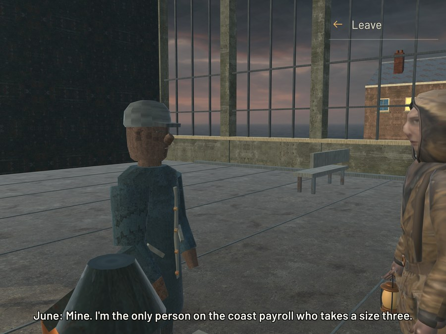

Unreleased game · iPhone & iPad
Low Water
The Occupied Line
The town says Salt Row is empty. Someone is still answering its phones.
A third-person survival-horror adventure about the people left behind by a rising tide. Repair the machinery. Follow the voices. Decide who gets the last working rescue equipment.
Four-page PDF · 2.5 MB

20connected chapters
3creatures to outwit
3playable aftermaths
OfflineNo ads or in-app purchases
A moment from the game
Hear the breath. Keep moving.
A continuous 21-second iPhone simulator capture, with the game's sound. Mara runs through the Service Gallery, takes a hit from the Bell Diver and falls after a second strike. Press play to watch.
The work of staying alive
A town worth coming back for.


Read what the town erased.
Inspect records, trace a disconnected line and find the homes the map has left out.


Keep the water moving.
Work valves, signals and brakes while the creatures react to the sound and light you use.


Stay for the people.
Listen to the witnesses. Choose a rescue crew, then live with the morning your choice leaves behind.
Actual iPad simulator captures. Images show the current development world and interface.
In development
A playable campaign.
A next phase to build.
The current iPhone and iPad build includes 20 compact chapters, three ending routes, checkpoints, optional conversations and an Immersive mode that clears extra controls. English dialogue uses synthetic voices.
Visual and animation refinement, sustained device performance, controller support and cross-device saves are proposed production work. The pitch describes the playable game and the scope of that next phase.
Open the full proposal